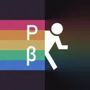

Portal 2 BETA Launcher
An independent Windows project for Portal 2 beta research, testing, preservation, and exploration.
R-2 in developmentWindowsPSBR
Welcome
P2BL is a dedicated launcher and research-oriented project built around historical Portal 2 development builds. R-2 is the current major development line and is a substantial continuation of the original R-1 prototype.
Browse DownloadsPortal Series BETA Research

PSBR is the community/research environment associated with P2BL. Visit the Discord to discuss beta research, preservation, technical findings, and related projects.
About P2BL
Portal 2 BETA Launcher (P2BL) is an independent Windows desktop project focused on historical Portal 2 beta research, preservation, testing, experimentation, and exploration.
P2BL began as the R-1 prototype and is now being substantially redeveloped as R-2. The project is closely associated with the Portal Series BETA Research (PSBR) community.
Project
Creator / developer: sonic Fan Tech
Platform: Microsoft Windows
Current development: R-2
Community: Portal Series BETA Research
History
R-1 established the original launcher concept. R-2 is a substantial redevelopment with a rebuilt presentation and expanded project ecosystem.
Project Artwork
R-1 / older UI

R-2 / new UI

Features by Release
Feature lists are organized by release so you can see which capabilities belong to each version. Open a build page for its feature overview, screenshots, download link, and release documents.
Original release
R-1
The original P2BL prototype, including beta build scanning, direct launching, Steam shortcuts, bundled fixes, and the port-forwarding helper.
R-1 FeaturesR-2 BETA 1
2.025.2-9.29.201-B
The first public R-2 beta with the rebuilt GUI and expanded launcher/build-management architecture.
BETA 1 FeaturesCurrent release
2.0.30-2.10.6.757
BETA 1.1 adds the tested download/hash workflow, updated No-Steam fix installation, Extra Tools, and the rebuilt in-game overlay with screenshot preview.
BETA 1.1 FeaturesProgram Technical Information
Application
- Windows desktop application.
- Main launcher written in C#.
- Native C++ components for the overlay system.
- Developed with Microsoft Visual Studio.
Architecture
- Main launcher GUI.
- P2BOverlayUIHandler native overlay component.
- Ex-onP2B-UIHandoler.exe helper component.
- Resource and saved-data directories.
Known project paths
Resources/C-Maps/<build> Resources/Mods/<build> Resources/SavedData/Settings.GL bin/DLLs/ bin/3RD-Party-Tools/ 1st-Party-Tools/SBSPE/ 1st-Party-Tools/bsp2vmf-SDT/
Known custom formats
.RBGIFormat.SSDA.SBGL.SBL.GL
Related first-party projects
SBSPE, bsp2vmf-SDT, and RBGIFormat-related tooling are part of the wider research/tool ecosystem discussed alongside P2BL.
Third-party software
7-Zip is a known third-party tool associated with the project. Third-party software remains governed by its own licenses.
EULAs & Licenses
First-party project EULAs and third-party license documents are listed below. Draft labels have been removed from the first-party documents and replaced with Version 1.0 documents for the website.